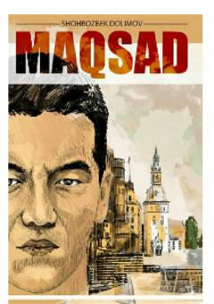

MMuallifning xorijiy davlatlardagi talabalik yillari va hayotiy qiyinchiliklari haqidagi avtobiografik kitobi.
Mazkur kitob muallif Shohbozbek Dolimovning Yaponiya, Norvegiya kabi xorijiy davlatlardagi o'qish va hayot yo'lidagi boshidan kechirgan sinovlari haqidagi avtobiografik asaridir. Unda chet elda ta'lim olishning yorqin tomonlari bilan birga, uning ortidagi og'ir qiyinchiliklar va muhitga moslashish jarayonlari ochiq bayon etilgan. Asar xorijda o'qishni niyat qilgan yoshlar uchun hayotiy saboq bo'la oladi.